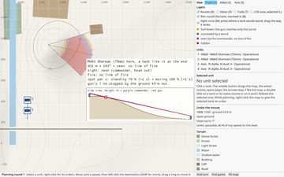
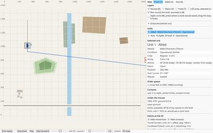
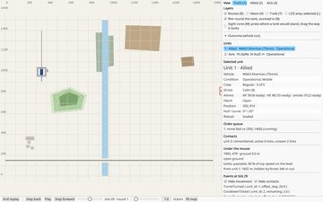
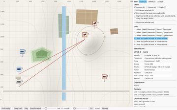
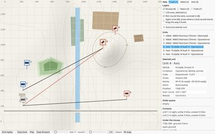

tankzim2000 TacAI
Open 6
Comrades' fire and lossesOpen
Does it count as the tank's own knowledge when it sees a neighbour's muzzle flash, or when a tank of its own is knocked out? Open, and otherwise it clashes with the principle of own knowledge.
Question: Do comrades' fire and losses count as the tank's own knowledge? (docs/archive/tacai.md 5, question 5)
Options
Counts as own knowledge
The tank sees the neighbour's fire, and a tank of its own is knocked out.
Does not count
The principle of own knowledge stands.
Open
- The answer also decides under-fire-unseen.
Conditional orders (candidate 6)Open
"When contact" or "after the first shot", and the next step, such as shoot and scoot. Open: now, later, or as part of the settings per tank.
Question: Conditional orders: now, later, or as part of the settings? (docs/archive/tacai.md 5, question 3)
Options
Now
Conditional orders are built now.
Later
After TacAI's first round.
Part of the settings
The same settings per tank that govern how TacAI weighs threat against mission.
Facts
| secondhand | Shoot & Scoot (forward, fire, back to the second point) | docs/archive/tacai.md 7.1, CMx1 manual |
Open
- Question 5.3 is unanswered.
- Question 5.2 is unanswered: special orders as in CM, settings per tank as in TacOps (SOP), or a mix?
A wedge that limits target choiceOpen
A wedge (a cover arc, Defend/arc) limits which enemies a tank may fire at, so that it does not fire at everything it sees. In CMx1 (Cover Arc) and CMx2 (Target Arc) the enemy outside the wedge is ignored until self-preservation takes over. Not built; the SetArc order is not built either.
Question: Should a wedge limit which enemy a crew fires at, and should self-preservation override it?
Options
Wedge limits the choice
Outside the wedge the enemy is ignored until self-preservation takes over, as in CMx1 and CMx2.
No wedge
Target choice stays the most dangerous enemy seen.
Facts
| stated | Candidate 7 (Kilen, Defend/arc) in docs/archive/tacai.md 3, not built: "Begränsar målvalet, gör inte att man skjuter på allt i den." | docs/archive/tacai.md, 3 (candidate 7) |
| secondhand | Cover Arc (CMx1): "a way to limit a unit's targeting options. A unit will not automatically fire upon every enemy unit which enters its covered arc." | docs/archive/tacai.md, 7.1 |
| secondhand | Target Arc (CMx2): the enemy outside the arc is ignored "until self-preservation takes over". | docs/archive/tacai.md, 7.2 |
Open
- SetArc is not built (see orders-setarc-open in the Orders part).
The turret keeps its direction a while after a killOpen
Today the turret holds its direction towards the last known position as long as the unit remembers the contact (30 ticks, CONTACT_FORGET_TICKS), then points straight ahead. Holding the direction a while longer after a defeated target (about 15 ticks) is postponed: it needs a countdown of its own on the unit and an event beside TurretTurned.
Question: Should the turret keep its direction for a time after a target is defeated, beyond the contact memory?
Options
Keep the contact memory only
Today: the turret holds its direction as long as the unit remembers the contact (30 ticks), then points straight ahead.
Hold about 15 ticks after a kill
The turret keeps its direction about 15 ticks after a defeated target, beyond the contact memory.
Facts
| stated | The contact memory is 30 ticks (CONTACT_FORGET_TICKS); the turret holds its direction as long as the unit remembers the contact, then points straight ahead. | SESSION.md, M7 step B; src/engine.rs CONTACT_FORGET_TICKS |
Code
src/engine.rs: desired_turret_heading_deg
Open
- The countdown on the unit and the event beside TurretTurned are not designed.
Target choice does not filter on line of sightOpen
choose_target picks among the seen threats with no line-of-sight filter. The line of sight is checked in evaluate_shot, so the nearest enemy can be hidden while a visible one stands farther off, and then nothing is fired that tick.
Question: Should target choice leave out enemies the tank has no line of sight to?
Facts
| DESIGN_CHOICE | Left as it is on purpose: evaluate_shot() already makes the line-of-sight check, and doing it twice would be a double truth. The consequence is that the nearest enemy can be hidden while a visible one stands farther off, and then nothing is fired that tick. | SESSION.md, FÖRSTÅR INTE / Öppna punkter, 2026-08-23 |
Code
src/tacai.rs: choose_target
Open
- The source marks it as an explicit TacAI candidate; nothing is decided yet.
Drill from real lifeOpen
What a group or crew does by itself at contact and under fire, without orders, according to real drill. Practical experience of drill and the field manuals (FM 17-12, FM 17-30) weigh more than the games studied here. The built behaviours (principles-drill) follow the field manuals where they were checked; the rest of real drill has not been gone through.
Question: Which reflexes of real drill does a crew have that ours lacks?
Facts
| stated | Question 7 in the list of open questions: what a group or crew does by itself at contact and under fire, without orders; practical experience and the field manuals weigh more than the games. | docs/archive/tacai.md 5, question 7 |
Open
- Which parts of real drill are not yet in the behaviour; to be checked against FM 17-12 and FM 17-30.
Decided 2
Round length: 60 secondsDecided
A round is 60 seconds for now (TICKS_PER_ROUND = 60). Perhaps later it becomes a scenario setting instead of a constant.
Question: How long is a round? (docs/archive/tacai.md 5, question 6)
Options
✓60 seconds
For now.
Why: Chosen: shorter rounds give more micromanagement, and a duel is decided within seconds anyway.
Shorter rounds
More micromanagement; the duel is still decided in seconds within the round.
Scenario setting, later
Instead of the constant TICKS_PER_ROUND.
Facts
| DESIGN_CHOICE | TICKS_PER_ROUND = 60 (not checked what depends on it). | src/engine.rs TICKS_PER_ROUND; src/battle.rs |
Code
src/engine.rs: TICKS_PER_ROUND
Open
- Scenario setting instead of a constant, perhaps later.
The operative AI is a player outside the engineDecided
The operative AI stays a player outside the engine. TacAI is a swappable step connected at each tick start: it runs in phase 1 against the same world state as decide(), answers with events that are applied in phase 2, and so takes effect from the next tick. Written as a direction on 2026-10-25, with no code yet at that time.
Question: How do the player and TacAI feed orders into the engine?
Open
- Not checked against the code here: whether TacAI is connected at the tick start in phase 1 as the source describes.
Built 18
Version 0.18.0 4
The selection for the first roundBuilt0.18.0
First round: threat assessment (3) first, then target choice by threat (9), self-preservation after stress (2, with backing away from the threat as 4) and Hunt (1). Conditional orders, Fast, the wedge and smoke wait. All four are built (threat assessment 0.16.4, target choice 0.16.5, self-preservation 0.16.6, Hunt 0.18.0); Fast was built later, see fast.
Question: Which behaviours should TacAI's first round contain, and in what order?
Options
✓Threat assessment, target choice, self-preservation, Hunt
The order 3, 9, 2 (with 4), 1 in docs/archive/tacai.md 3.
Why: yes, the selection and the order for TacAI are ok
Conditional orders first
Candidate 6, "when contact" or "after the first shot". Waiting.
Fast first
Candidate 5, ignore threats as long as it is possible. Waiting.
Wedge and smoke later
Candidates 7 and 8. Waiting.
Code
src/tacai.rs: assesssrc/tacai.rs: choose_targetsrc/tacai.rs: next_behaviour
Open
- Conditional orders (6), the wedge (7) and smoke and the rest (8) are not decided. Fast (5) is built, see fast.
Hunt with observation halts and a stop at a real threat (step 4)Built0.18.0
Hunt is a choice of its own in the orders, not a flag on a move: always at Normal, and it cannot be combined with Fast or any other speed. While it moves, the tank stops for 3 s after 10 s in motion to observe (chosen option b). At a real threat, a known enemy who penetrates us within 60 s, it stops and waits, and continues when no such threat is known.
Question: How should Hunt detect the enemy better than ordinary movement, and when does it stop?
Options
✓Observation halt
3 s halt after 10 s in motion, the rhythm offset by id (MOCK).
Why: Chosen.
Bonus while moving
Better detection without stopping.
Why: Not chosen: (b) was chosen instead.
✓Own choice beside the speeds
Hunt is its own step in the orders and its own button in the menu, beside Slow, Normal and Fast.
Why: Chosen: Hunt cannot be combined with a speed, and it shows as something of its own.
Flag on a move
Hunt set as a flag on a move at any speed.
Why: Not chosen: Hunt is not combined with a speed.
Facts
| stated | Observation halt after movement: "By alternating movement and halts, the great advantage of shooting and observing from a stationary tank can be fully utilized". | FM 17-30 (1942) fig. 122, docs/archive/tacai.md 5, question 4 |
| MOCK | Real threat: a known enemy who penetrates us within 60 s. Remembered ones are counted from the last known position. | src/tacai.rs REAL_THREAT_S |
| MOCK | Observation halt 3 s after 10 s in motion. | src/tacai.rs HUNT_MOVE_S, HUNT_HALT_S |
| observed | hunt_forest 50 seeds: with Hunt the Shermans see first in 38 (without Hunt 14). | git 072bbc5 |
| DESIGN_CHOICE | Hunt is its own step in the orders, always at Normal. A move with a hunt flag, or a hunt with a speed, is refused. | docs/archive/tacai.md 5.8, src/orders.rs |
Code
src/tacai.rs: next_behavioursrc/tacai.rs: REAL_THREAT_Ssrc/tacai.rs: HUNT_MOVE_Ssrc/models.rs: hunt
Open
- Being fired on without seeing the shooter: see under-fire-unseen.
Pictures

Fast (candidate 5)Built0.18.0
Built in 0.18.0: a Fast move makes no short halt to fire. The gun fires only when the tank stands of itself, and the turret follows the target. Shaken drives on instead of being pinned, Rattled still backs out, there is no cover-seeking, the hatch still closes at Tense, and under fire from an unseen enemy the turret turns but the tank does not stop. Usual reactions after the step. Hunt cannot be combined with Fast.
Question: Should Fast ignore threats and not stop to fire? (docs/archive/tacai.md 3, candidate 5)
Options
✓No short halt at Fast
A Fast move makes no short halt to fire. The gun fires only once the tank stands of itself.
Why: Chosen: the main gun fires only from a stationary tank, so the turret follows the target and the gun waits for the stop.
✓Shaken drives on
A Shaken crew on a Fast move keeps driving instead of being pinned.
Why: Chosen: the order is abandoned last.
✓Rattled still backs out
A Rattled crew on a Fast move backs out as before.
Why: Chosen: CMx1 makes Fast decrease the likelihood of abandoning the order, not rule it out.
Hunt combined with Fast
Hunt on a Fast move.
Why: Not chosen: Hunt is its own choice and is not combined with a speed.
Facts
| secondhand | decreasing the likelihood that the vehicle's crew will abandon the order | docs/archive/tacai.md 7.1, CMx1 manual |
Code
src/tacai.rs: driving_fastsrc/engine.rs: decide
Open
- Principle 6 (visible trade-off) also applies, and question 5.2 about settings per tank.
Pictures

A moving target is easier to spot by its speedBuilt0.18.0
A moving target is easier to spot the faster it moves: Slow ×1.2, Normal ×1.5, Fast ×2.0 (before 0.18.0 ×1.5 for all). A backing tank counts as Slow. The scenarios of the time did not change; the test scenario long_crossing was added to catch the rule.
Question: How much easier is a moving target to spot, by its speed?
Options
✓Factor by speed
Slow ×1.2, Normal ×1.5, Fast ×2.0.
Why: Chosen: the faster target is more visible, through dust and noise.
One factor for all speeds
×1.5 for every moving target, as before 0.18.0.
Why: Not chosen: replaced in 0.18.0.
Facts
| MOCK | Dust and noise make a faster moving target easier to see. Slow 1.2, Normal 1.5, Fast 2.0. | src/rules.rs target_motion_factor |
| observed | The scenarios of the time did not change (the chance was already 1.0 at their ranges); long_crossing, a Sherman driving into sight about 1.7 km away, was added, and its facit changes with the factor. | SESSION.md 0.18.0, test_scenarios/long_crossing.json |
Code
src/rules.rs: target_motion_factorsrc/engine.rs: motion_of
Version 0.17.5 1
Under fire without seeing the shooterBuilt0.17.5
A crew shot at by an enemy it does not see gets a suspected contact where it reckons the shot came from (bearing ±15°, range ±30 % for Regular), kept as a remembered threat for 30 s and replaced when the shooter is seen; a unit that fired is twice as easy to spot the next tick. Only the crew shot at knows; comrades' knowledge waits.
Question: What does the tank do when it is fired on without seeing the shooter?
Options
✓Suspected contact
The crew gets a suspected contact where it reckons the shot came from. It counts as a remembered threat: the turret turns there, Hunt stops and cover is sought against it.
Why: Chosen.
✓The firing reveals the shooter
A unit that fired is twice as easy to spot the next tick.
Why: Chosen.
✓Only the crew shot at knows
Only the crew that was shot at knows the reckoning; comrades' fire and losses are not counted.
Why: Chosen over comrades too.
Comrades too
Comrades' fire and losses count as the tank's own knowledge.
Why: Not chosen. Waits for question 5.5.
Facts
| MOCK | Shot at from an unseen enemy: a suspected contact where the crew reckons the shot came from, bearing ±15° and range ±30 % for Regular, one standard deviation, scaled by the crew. | src/rules.rs: reckon_shooter |
| MOCK | A unit that fired is twice as easy to spot the next tick (FIRED_SPOT_FACTOR 2). | src/rules.rs: FIRED_SPOT_FACTOR |
| DESIGN_CHOICE | The kind of enemy that fired is known to the crew: a simplification. | docs/archive/tacai.md, 0.17.5 entry |
| stated | "Tanks in defiladed position can quickly locate and promptly bring fire upon hostile weapons that fire upon the advancing tanks." | FM 17-30 (1942), docs/archive/tacai.md, 0.17.5 entry |
| stated | "When fired upon, scouts seek cover, report contact, and then reconnoiter to determine the direction and nature of the hostile action." | FM 17-10 (1942), docs/archive/tacai.md, 0.17.5 entry |
| observed | Scenario facit rewritten at 0.17.5: hunt_forest Allied 23 (21 before), valley 34 (39 before), more full cover in valley 30 (24 before). | git 8c621e0 |
Code
src/rules.rs: reckon_shootersrc/rules.rs: FIRED_SPOT_FACTORsrc/engine.rs: after_fire
Open
- Comrades' fire and losses waits for question 5.5 (comrades-knowledge).
Pictures

Version 0.17.3 1
Halt in coverBuilt0.17.3
In HuntStop, when no shot can come next tick, the tank looks within 50 m for better cover against the most dangerous known enemy: hull down first, otherwise a forest edge. A pinned crew looks for a place out of sight. It moves there, backing with the front toward the threat when the cover lies away from him, then fights from it (HuntStop) or stays pinned.
Question: Should a tank that stops for a threat look for better cover nearby, and how far should it go? And should a pinned crew stand still or seek full cover?
Options
✓Search 50 m for better cover
The places tried: 16 bearings at 15, 30 and 50 m. A place counts only if it is better than the one the tank stands on; hull down ranks above a forest edge.
Why: Chosen: 50 m is the farthest the crew moves to cover of itself; farther is the player's decision. The distance is MOCK.
Pinned: stand
The crew stays where it is with the hatch closed, as decided in self-preservation (0.16.6).
Why: Not chosen for this decision: a pinned crew now seeks full cover first.
✓Pinned: seek full cover
A pinned crew looks for a place out of sight of the threat and moves there, then stays pinned.
Why: Chosen: a crew under the heaviest stress takes the place that hides it.
Facts
| stated | Halt in defilade or concealment. | FM 17-30 Tank Platoon (1942), fig. 124 |
| MOCK | Search radius 50 m, 16 bearings at 15, 30 and 50 m. | src/tacai.rs COVER_RADII_M, COVER_BEARINGS |
| DESIGN_CHOICE | A forest edge counts as concealed when the forest uses at least half of the threat's sight budget to it. | src/tacai.rs CONCEALED_SHARE |
| observed | crest_cover: the tanks are already hull down when they crest, so they seek nothing. Cover is taken in hunt_forest (14 of 50 seeds) and hill_assault (13 of 30). | SESSION.md 2026-11-07 (0.17.3) |
| observed | Fixed with it: a shot with no line of fire counted as worth a round since 0.11.1; a commander with his head out could see over a crest what the gun could not, and the tank halted for a shot that could never come. | src/engine.rs worth_a_round |
Code
src/tacai.rs: find_coversrc/tacai.rs: cover_atsrc/engine.rs: moving_to_cover
Open
- A hull-down order that moves as needed and reloads in cover is not built; the hull-down move is automatic here (docs/archive/tacai.md 7.3).
Pictures

Version 0.17.2 1
Shoot firstBuilt0.17.2
In HuntStop and Pinned the hull keeps still while a shot can come next tick (a target worth a round, the crew has reacted, the gun is loaded), and turns while the crew reacts or the loader works.
Question: Should the hull keep still while a shot can come next tick, rather than turn toward the threat?
Options
Turn first
Stopped, the hull turns toward the threat at once, as in 0.17.0. The gun comes off its target while the hull turns (no stabiliser).
✓Shoot first
While a shot can come next tick the hull keeps still; it turns while the crew reacts, while the loader works, or when nothing is worth a round.
Why: Chosen: the first round is the one that matters, and the hull turn costs the gun its target. Measured on hunt_forest: Allied fired first in 14 of 50 seeds (1 before), won 20 (16 before).
Facts
| stated | At short ranges, a good gunner should hit with his first round. | FM 17-12 (1943), docs/archive/tacai.md 5.4 |
| stated | Seek to surprise the enemy but do not let yourself be surprised. | FM 17-30 (1942), docs/archive/tacai.md 5.4 |
| DESIGN_CHOICE | The rule itself: a ready shot goes first, and the hull turns only when no shot can come next tick. | src/engine.rs: shot_next_tick |
| observed | hunt_forest, 50 seeds with Hunt: Allied fired first in 14 (1 before), won 20 (16 before). | SESSION.md 2026-11-07 (0.17.2) |
Open
- Measured on hunt_forest and two_vs_two only.
- Engine level, not decided: a unit that fires keeps driving, because movement runs after firing in decide(). A return after a shot would stop it from ever arriving while enemies are visible, so it stays open until observed (SESSION.md, 2026-08-23).
Version 0.17.1 1
Turret toward the expected threatBuilt0.17.1
The turret points at its target; else at the last enemy it remembers; else where the briefing's threat_from [x, y] for its side says the enemy is; else straight ahead. The turret turns while the hull drives.
Question: Should the turret point toward the threat the briefing expects when no enemy is known?
Options
✓Turret toward the expected threat
threat_from [x, y] per side in the order (Unit::expected_threat); used only when no enemy is known or remembered.
Why: Chosen: reflex (b) in docs/archive/tacai.md 5.4, after hunt_forest showed the Sherman's turret too slow to meet a Pz IV already laid on the gap.
Turret straight ahead or on the last seen enemy
The turret without an expected threat: its target, else the remembered enemy, else straight ahead.
Facts
| stated | "Where is the enemy?" | FM 17-30 (1942), quoted in SESSION.md 2026-11-07 |
| stated | "continuously studies the ground to the front and flanks" | FM 17-30 (1942), quoted in SESSION.md 2026-11-07 |
| observed | hunt_forest, 50 seeds with Hunt: the Shermans win 16 (14 before). The Allied side still fires first in 1 of 50. | SESSION.md 2026-11-07 (0.17.1) |
Code
src/engine.rs: desired_turret_heading_deg
Open
- Which threat the tank expects in a real fight, beyond the briefing's threat_from.
- What the turret does when a threat actually appears.
Version 0.17.0 1
Front toward the threat when stoppedBuilt0.17.0
In HuntStop and Pinned the tank turns its hull toward the most dangerous known enemy and brakes first, on the spot. The gun stays on its target; this does not apply at a short halt or an observation halt. Since 0.17.2 a ready shot goes first, see shoot-first; the hull stays still while a shot can come next tick.
Question: Should the tank turn its front toward the threat when it stops for a real threat?
Options
✓Front toward the threat when stopped
tacai::threat_to_face: shortest time to penetrate us, otherwise the nearest known. Shares engine::turn_front_to with the withdrawal.
Why: Chosen: (a) built first (0.17.0); (b) built as its own decision (0.17.1); (c) built as halt-in-cover (0.17.3).
Turret toward the expected threat while moving
FM 17-30: sectors. Built as turret-to-expected-threat (0.17.1).
Why: Built later as its own decision: turret-to-expected-threat (0.17.1).
Facts
| stated | "rotating to face the threat and retreating away from threats" (for tanks, self-preservation). | CMBN Game Manual p. 76, docs/archive/tacai.md 7.2 |
| stated | Reverse: "keeping its gun and stronger front armor forward towards the enemy while retreating". | CMBN Game Manual pp. 79–82, docs/archive/tacai.md 7.2 |
| secondhand | "Dance of death": backing with the front toward the threat is faster and safer than turning on the spot. | Gemini summary, docs/archive/tacai.md 7.5 |
| observed | hunt_forest 50 seeds: with Hunt the Shermans win 14 (previously 4), without Hunt 15 (14). | git 66acfe4 |
| DESIGN_CHOICE | The tank chooses the enemy who penetrates fastest, otherwise the nearest known. | src/tacai.rs threat_to_face |
Code
src/tacai.rs: threat_to_facesrc/engine.rs: turn_front_to
Open
- The player order 'backa med fronten mot hotet' is not built; the TacAI reaction is (docs/archive/tacai.md 3, candidate 4).
- Rotate as an order, from the CMx1 movement list (docs/archive/tacai.md 7.1), is not decided.
Version 0.16.6 2
Self-preservation after stress (step 3)Built0.16.6
Tense closes the hatch, and it stays closed until ordered. Shaken gives Pinned: the tank stands still, the whole queue waits, and it fires as usual. Rattled and mobile backs away from the most dangerous known enemy, at most 300 m or out of sight.
Question: When does an override of the order end, and what does the tank do under stress? (docs/archive/tacai.md 5, question 4)
Options
✓Hatch closed until ordered
Tense closes the hatch once per stress period; the lock is released when the crew has been Calm.
Why: Chosen: the hatch stays closed until ordered open.
✓Shaken: pinned down
Pinned: stands still, the whole queue waits, including Wait and SetHatch; fires as usual. Out below 37.5 (half a band, DESIGN_CHOICE).
Why: Chosen.
✓Rattled: back away, resume when Calm
Backs away from the most dangerous known enemy, at most 300 m or out of sight; resumes the order when the crew is Calm. Without a gunner: for good.
Why: Chosen: back to the orders once calm.
✓The whole queue waits
Also when the crew changes behaviour or closes the hatch.
Why: Chosen: the whole queue waits.
Facts
| MOCK | Withdrawal at most 300 m, or until it sees no enemy. | src/tacai.rs WITHDRAWAL_M |
| DESIGN_CHOICE | The tank returns to the order below 37.5 stress (half a band below Shaken). | src/tacai.rs PINNED_RELEASE_STRESS |
| observed | two_vs_two 100 seeds: Allies 39 (previously 34), Axis 55 (60). | git d8f6603 |
| observed | Since 0.17.4 a backing tank counts as moving (slow) while it has speed; before, it counted as standing, being seen and shot at as such. | src/engine.rs motion_of |
| stated | "Units with or without orders will also usually initiate evasive action on their own in the face of extreme danger" | CMBN Game Manual p. 76, docs/archive/tacai.md 7.2 |
Code
src/tacai.rs: next_behavioursrc/tacai.rs: button_upsrc/tacai.rs: WITHDRAWAL_M
Pictures

The hatch closes at TenseBuilt0.16.6
TacAI closes the hatch when stress reaches Tense, not at the first hit, once per stress period. It stays closed until ordered.
Question: Which stress level closes the hatch: Tense or the first hit?
Options
✓Tense
Close at Tense, once, closed until ordered.
Why: Chosen, though closing at the first hit was the personal instinct.
First hit
Closing the hatch at the first hit: the personal instinct, not chosen for the crews.
Facts
| MOCK | With today's stress figures: a Regular closes after one bounce and one miss, or immediately at a penetration. | docs/archive/tacai.md 1.1 (F8 stress figures) |
Code
src/tacai.rs: button_upsrc/models.rs: Event
Open
- Closing the hatch quickly under small-calibre fire or artillery is not built. Artillery is not in the model yet (docs/archive/tacai.md 7.5).
Version 0.16.5 1
Target choice by threat (step 2)Built0.16.5
The gun lays on the one that can penetrate us fastest of the seen targets, rather than the nearest. It stays on its target until another penetrates in under 75 % of his time, and on a target out of sight as long as no other is seen.
Question: Which target should the gun lay on?
Options
✓Most dangerous first, with inertia
Seen and not written off: taken as alive, worth a shot, then the shortest time to penetrate us, nearest, lowest id. Switches only below 75 % (SWITCH_SHARE).
Why: Chosen. Target choice is the engine's; the player does not choose targets.
Nearest active contact
What the engine did before.
Facts
| MOCK | Target changes only if another penetrates in under 75 % of his time. | src/tacai.rs SWITCH_SHARE |
| observed | two_vs_two 100 seeds: Allies 34 (previously 30), Axis 60 (65). | git 9a6fc99 |
| secondhand | "Units on the battlefield constantly look for their own targets, and engage them based on many variables including exposure of the enemy, distance, cover, probability to hit, ability to cause damage, facing, available ammo, etc." | CMx1 manual p. 84, docs/archive/tacai.md 7.1 |
| secondhand | Combat Mission Wiki on target choice: "prefers closer targets, and more exposed targets". | Combat Mission Wiki (Fandom), docs/archive/tacai.md 7.4 |
Code
src/tacai.rs: choose_targetsrc/tacai.rs: SWITCH_SHARE
Open
- The choice counts the time to penetration, not cover or the exposure of the enemy (CMx1 list, docs/archive/tacai.md 7.1).
- Whether to prefer closer and more exposed targets, as the Combat Mission wiki describes (docs/archive/tacai.md 7.4), is not decided.
Version 0.16.4 3
Principles 1–7 for TacAIBuilt0.16.4
TacAI is drill, not tactics; the threat assessment is dynamic, from what the tank knows; threat and stress share the work; the tank is the unit; bail-out follows from the penetration chain, not from a TacAI choice; every choice has a visible trade-off and shows as an event with its reasons; Hunt goes on when no real threat is known. All seven hold in the code from 0.16.4.
Question: Which principles should TacAI be built on?
Open
- Question 7 is open: what a crew does on its own at contact and fire, without orders, weighing the field manuals FM 17-12 and FM 17-30 and real-life experience (docs/archive/tacai.md 5, question 7).
Principles 8 and 9: the log and the state machineBuilt0.16.4
Each decision is a pure function of the tank's position and knowledge, and is logged with the numbers it was based on (8). Two layers: threat assessment without memory, and behaviour as a state machine (9).
Question: How should TacAI's decisions look in the code and in the log?
Code
src/tacai.rs: next_behavioursrc/tacai.rs: assess
Threat assessment (step 1)Built0.16.4
A pure function of the tank's own contacts, computed every tick: for each known enemy the distance, the chance to penetrate in each direction, the time to penetration and whether he is seen or remembered. Target choice and Hunt read it, and it shows in the log with --threats.
Question: How does the tank measure the threat from an enemy?
Options
✓Pure function of the tank's knowledge
Chance per shot in each direction, time to penetration (reload time / chance), the sum 1 / his time as danger.
Why: Principle 9: the threat assessment is recomputed every tick from the tank's knowledge.
Static type against type
The assessment CM1 had, criticized on the forum (tank_41, 2000).
Facts
| DESIGN_CHOICE | Enemy crew from the briefing (expected_enemy), otherwise as the tank itself; Calm and not spotted. | src/tacai.rs assess and their_chance |
| DESIGN_CHOICE | A remembered enemy is counted at his last known position, stationary and with his front toward us (worst case). | src/tacai.rs our_chance |
| DESIGN_CHOICE | Danger = the sum of 1 / his time to penetration. | src/tacai.rs danger; docs/archive/tacai.md 5, question 1 |
| stated | Remembered enemies count alike from their last known position, marked as remembered, but "räknas ej som nya" (no new contact). | docs/archive/tacai.md 5, question 1 (b) |
Code
src/tacai.rs: assesssrc/tacai.rs: dangersrc/tacai.rs: report
Open
- How the threat is used to assess a tank facing many enemies, and what counts as a real threat (see hunt).
Version 0.16.3 1
The tank commander hit with the hatch openBuilt0.16.3
A hit that does not penetrate can give fragments to a tank commander with the hatch open: 15 % on a turret hit, 5 % hull, 3 % tracks and running gear (MOCK), of which 40 % killed. It affects the fight while the tank moves.
Question: Should the tank commander with the hatch open be hit by fragments when a hit does not penetrate? (docs/archive/tacai.md 1.1)
Options
✓Fragments from a hit without penetration
rules::commander_fragments. No bail-out; the tank then sees as with the hatch closed.
Why: Chosen: the tank commander.
No fragment risk
The commander is only safe behind a closed hatch.
Facts
| stated | "Tank CO's, when riding with their heads and shoulders out of the turrets--which is normal--are sometimes wounded by shell fragments" (excerpt from ORO-T-117). | ORO-T-117, docs/archive/tacai.md 7.6 |
| MOCK | Fragments hit the commander 15 % on a turret hit, 5 % hull, 3 % tracks and running gear; 40 % of them killed. | src/rules.rs commander_fragments, KILLED_SHARE |
Code
src/rules.rs: commander_fragmentssrc/rules.rs: KILLED_SHARE
Version 0.16.2 1
Withdrawal when the gunner is goneBuilt0.16.2
A mobile, armed tank without a healthy gunner backs straight away from the nearest known enemy, with its front toward it, at most 300 m (MOCK). Reverse speed is per tank: Sherman 5.4 km/h, Pz IV H 8 km/h.
Question: What does a tank do when its gunner is knocked out or wounded? (docs/archive/tacai.md 1.1)
Options
✓Simple rule: back away from the shooter
From the nearest known enemy, otherwise straight back. Stops, turns the front toward the threat, backs straight. No route planning.
Why: Chosen: a simple rule for now.
Route planning to cover
Seek cover along a road. Not built.
Facts
| secondhand | Sherman reverse: 5.4 km/h, calculated from reverse gear 5.65:1 and fifth gear 0.73:1 (26 mph). | theshermantank.com via SESSION.md 0.16.2; src/data.rs reverse_speed_mps |
| MOCK | Pz IV H reverse: 8 km/h. | src/data.rs reverse_speed_mps (War Thunder 8–9 km/h, game value) |
| MOCK | The withdrawal ends after at most 300 m or when the tank sees no enemy. | src/tacai.rs WITHDRAWAL_M |
| observed | Since 0.17.4 a backing tank counts as moving (slow) while it has speed; before, it counted as standing, being seen and shot at as such. | src/engine.rs motion_of |
Code
src/tacai.rs: withdrawingsrc/models.rs: Behaviour
Open
- A general backing move with the front toward the enemy, and its link to the withdrawal in the order menu, is not decided (SESSION.md, 2026-11-01).
- Reverse as an order, from the CMx1 movement list (docs/archive/tacai.md 7.1), is not decided.
Version 0.16.1 1
The penetration as a chain (the crew's fate)Built0.16.1
A penetration goes as a chain: which part is hit, who at that position is hit, whether it burns, and what the crew does. It replaces F8's damage table. Everything is MOCK; the whole should follow history.
Question: How should a penetration determine the crew's fate? (docs/archive/tacai.md 1.1)
Options
✓The chain: part, who, fire, action
rules::penetration_chain. Bail-out on fire or two hit, otherwise 60 % (one hit) / 40 % (none). Driver hit: stands still. Gunner hit: silent gun.
Why: Chosen: the outcome follows how bad the penetration is.
Abstract damage table (F8)
Destroyed, Immobilized, NoEffect. Replaced.
Facts
| stated | "When tanks have been penetrated by A/T fire, mombors of crew who have not been killed or wounded or knocked unconscious usually mamge to escape even though tank is set on fire." (OCR spelling errors in the source.) | ORO-T-117 (1951), docs/archive/tacai.md 7.6 |
| secondhand | Per penetration about one killed or wounded per lost tank; 1.28 if it burned, 0.78 if not. | Dupuy, Attrition (1990) pp. 80–81, docs/archive/tacai.md 7.6 |
| MOCK | Chance per part and position; bail-out 60 % / 40 % when there is no fire and no double hit. | src/rules.rs penetration_chain, UnitModel::fire_risk |
Code
src/rules.rs: penetration_chainsrc/engine.rs: seeing_hatch
Open
- How much went through (the excess) and the fate per position in the final data may come later.
Parked 3
Tick length (parked)Parked
The tick length is 1 s today and stays so. Making the length a constant and counting reaction times in fractions of a second is postponed. The plan is first an explicit constant for the length, then reaction time in fractions of a second; the reason is that at 0.1 s per tick everything would have to be recounted (movement, turret traverse, reload, speed, braking, chances per tick).
Question: Should a tick be shorter than a second? (docs/archive/tacai.md 5, question 6)
Options
✓1 s per tick (stays)
Built into movement, turret traverse, reload time, chances per tick.
Why: Chosen: put off to the future.
Constant tick length, fractions
Reaction time in seconds, so that Elite and Veteran can be told apart.
Facts
| MOCK | crew_reaction_ticks and stress_reaction_ticks in whole ticks. | docs/archive/tacai.md 5, question 6 |
| DESIGN_CHOICE | 1 s per tick is built into movement, turret traverse (20°/tick), reload time, speed, braking and chances per tick. | src/engine.rs; src/rules.rs |
Code
src/engine.rs: TICKS_PER_ROUND
Open
- Making the tick length a constant, and counting reaction time in fractions of a second.
Infantry controlled by the program (parked)Parked
Infantry will later be fully program-controlled, like background scenery, and then has only TacAI as its producer. Until then, TacAI must not assume there is a player order to question.
Question: How is infantry controlled, and what should TacAI assume about it?
Options
Fully program-controlled, background scenery
The infantry has only TacAI as producer. The machine gun and HE get their target then.
Player-controlled
Infantry with its own orders. Not chosen.
Open
- When the infantry arrives, with the machine gun and HE.
Firing the main gun on the move in an emergencyParked
A crew may in the future fire the main gun while driving, but only in an emergency. Today a tank fires only when it stands still: a short halt first, and no halt at Fast. Parked as a future decision.
Question: Should a crew fire the main gun on the move in an emergency, and what is an emergency?
Facts
| stated | "only in an emergency and at ranges of 600 yards or under" (FM 17-12, par. 55). | FM 17-12 § 55, checked, quoted in SESSION.md, Framtida idéer (Eld under färd i nödfall) |
Open
- What an emergency is: the range, the threat and the stress of the crew are for later.
- How much the hit chance falls when the tank is moving.
Next (1)
Silent wreck is shot at until written offQuestion
A tank knocked out without fire and without a visible crew is shot at by the survivor until it is written off. Open: should ProbablyOut shorten the time?
SESSION.md 2026-11-01, step 2 (B1): a silent wreck is written off after N = 30 ticks without movement or fire (MOCK). The consequence: a wreck that a comrade knocked out silently is Operational for the one who has not gone through it himself, and the shots bounce so that it keeps being shot at until the ammunition runs out. Radio (B2) and seeing others' hits (B3) would solve it. Open: should ProbablyOut shorten the time?
Facts
| observed | Over the full 60 s: shots 4.9 → 7.3, hits 2.5 → 3.7 (300 seeds vs step 1). | SESSION.md 2026-11-01, step 2 (Effect) |
Later (6)
Smoke, small movements and laterIdea
Candidate 8: smoke, offensive and defensive, fire at a suspected position, small movements and hull down, comrades' fire and the command chain. Smoke, fire at a suspected position, comrades' fire and the command chain are not built. Small movements and hull down are built (see halt-in-cover, 0.17.3).
Gathers candidate 8 in docs/archive/tacai.md 3 and the loose notes under 6 (The tank uses terrain; Later with more tanks). The CMBN manual has the tank pop smoke and back away as self-preservation (7.2). In CM1, medium tanks fired smoke at a Tiger they could not penetrate, and in CM2 only 'pop smoke and reverse' (7.4). TacAI never fires at a suspected position in CM (7.4); with us there is the ghost (last_known). The command chain requires a group, a leader and a channel between the tanks, and its own milestone after the first TacAI (7.4).
Facts
| secondhand | popping smoke, rotating to face the threat and retreating away from threats | docs/archive/tacai.md 7.2, CMBN manual p. 76 |
decision: Self-preservation after stress (step 3)decision: Front toward the threat when stopped
The crew talks in the logsIdea
The story in the log: the crew says what it does, from the events and the situation. No language model at runtime; the content is written once, and the variants are governed by the situation.
The loose note in docs/archive/tacai.md 6, 'The crew talks', is not top priority. A grammar with variants driven by the events, gaps filled from the situation ({target}, {distance}, {clock direction}, {ammunition}, {who}), and variation by stress and training (a calm crew short and correct, a stressed one interrupted, Green forgets steps). Separate from the simulation: it reads the events afterwards with its own random stream, so the fight is never affected and the same seed gives the same story. The fire command in FM 17-12 gives the template, but the wording is not checked. Work: a few hundred lines of Rust and a data file with the phrases. To do before it is written in: check the wording of the fire command with source_search. Variation also by commander: a personality per tank commander, drawn from the seed, and a memory, so the same line is not used twice within a short time. The phrases (a few hundred per situation, role and stress level) are where one-off writing help does the most good.
The crew's fate per position in the final dataPlan
Decided (docs/archive/tacai.md 1.1): when a tank is knocked out, the crew's fate per position goes into the final data, for example 'driver, gunner dead, rest of crew bailed out'. The fate follows how bad the penetration is. Built after TacAI.
Decided in docs/archive/tacai.md 1.1. The fate is drawn at knockout with a seeded draw(), from what happened: where the penetration went in, whether the tank burns, and how much went through. The shares per position are MOCK. The whole is calibrated against ORO-T-117 (7.6): on average one or two hit per penetration, and most often bail-out. The fate belongs to the final data and to the AAR in HTML, not to the course of the fight. According to 1.2 it can wait until after TacAI.
Facts
| stated | Penetrations usually kill or injure one or two crew members and rest escape even if tank burns. | ORO-T-117 (1951), interviewed officers, docs/archive/tacai.md 7.6 (OCR excerpt) |
Loss counter per tankPlan
Killed, wounded and missing are counted separately and per tank, and are taken up in the AAR. Decided in 1.1, not built.
Decided in docs/archive/tacai.md 1.1: the losses are a counter that is taken up in the AAR. The number of crew is shown in the unit information (5 in Sherman and Pz IV). The loader and the machine gunner have no consequence of their own and are counted against the number hit. Basis for loss ratios: ORO-T-117 and Dupuy (7.6). The difference between them (ORO counts missing, Dupuy does not) is not investigated.
Facts
| stated | Per tank: 2.0–2.5 losses (killed, wounded, missing). | ORO-T-117 via docs/archive/tacai.md 7.6 |
HE against soft targetsIdea
HE is counted in the stock but not fired until there are soft targets. Smoke is not fired either. Not built.
docs/archive/tacai.md 1.2 point 1: HE is counted but not fired until there are soft targets; smoke is counted but not fired. The basis is FM 17-12 (7.8): the gun should be saved, and the machine gun is used against what it can handle. FM 17-12 also says that HE at over 2,000 yards against a tank hits the track, which gives a possible choice of shell for TacAI.
Facts
| stated | Conserve the 75-mm ... ammunition. Do not use the tank gun against a target when the machine guns can handle it. | FM 17-12 (22 Apr 1943), docs/archive/tacai.md 7.8 |
| stated | "Use armor-piercing ... against medium and heavy tanks. Do not use it at ranges over ... 2,000 yards for 75-mm." | FM 17-12 (22 Apr 1943), docs/archive/tacai.md 7.8 |
| stated | "At ranges over 2,000 yards, use 75-mm HE shell against tanks; a hit on the track will disable the tank." | FM 17-12 (22 Apr 1943), docs/archive/tacai.md 7.8 |
Hunt stops for harmless targets far awayIdea
Hunt stops for a target that is harmless and far away. It needs a better test of what is relevant before it stops.
From the loose notes in docs/archive/tacai.md 7.5. Hunt stops at a real threat (an enemy that gets through us in less than a set time); a distant target that cannot hurt us can still make it stop. A better relevance test is wanted; nothing is decided.
Facts
| stated | Hunt stops for harmless targets far away; it needs better relevance. | docs/archive/tacai.md 7.5, the list of loose notes (around line 522) |
decision: Hunt with observation halts and a stop at a real threat (step 4)
Maybe (7)
The machine gunner as a weaponParked
The machine gunner is a position in the crew now, but not a weapon in the fight. The machine gun gets its target when the infantry arrives.
docs/archive/tacai.md 1.2 point 2: the machine gunner as a position now, the weapon later. Under 'Can wait' it says the machine gun and HE get their target when the infantry arrives. Connected with the infantry possibly becoming program-controlled as background.
decision: The penetration as a chain (the crew's fate)decision: Infantry controlled by the program (parked)
Infantry fully program-controlledParked
The infantry becomes background scenery that only TacAI controls. Parked. TacAI must not assume that a player order exists.
docs/archive/tacai.md 1.2 (Infantry, parked) and SESSION.md 2026-11-07. It fits the principle of one order type with two producers: the player before the round and TacAI during the round. The infantry then has only TacAI as producer. The machine gun and HE get their target when the infantry arrives.
A strategic layer on topParked
A campaign level that takes the tank between battles, with the same crew in the next battle, and a ready export of the final data. Not a goal now.
docs/archive/tacai.md 1.1 and SESSION.md 2026-11-07: loss and location statistics are campaign level, and a strategic layer is not a goal now. The final data should be a finished export that someone can build a strategic layer on later.
Hold fire to wait for a closer or side-on targetIdea
A tank could hold its fire and wait for a closer or side-on target, as in an ambush, instead of firing at a shot that is only worth a round. HoldFire exists in the code for a shot that is not worth a round, but nothing decides to wait for a better one.
Idea 2 under 'duellen' in docs/archive/tacai.md 6. In an ambush the chance rises when the enemy comes nearer or shows his side. The idea is a fire discipline that can be calculated.
The direction of the enemy's gun as a threat signalIdea
Whether the enemy's turret points at us could be a threat signal, so that he becomes the priority. Target choice today uses only the time he needs to get through us.
Idea 3 under 'duellen' in docs/archive/tacai.md 6: the source says that he lays on us gives stress and makes him target one. The source marks the turret direction in contact as already in the engine.
decision: Target choice by threat (step 2)decision: Threat assessment (step 1)
Angle the hull to the main threat to raise the slopeIdea
Angling the hull toward the main threat would raise the effective slope of the front armour. Front-to-threat turns the front toward the threat, which is a different idea.
Idea 1 under 'terräng' in docs/archive/tacai.md 6, and one of the five ideas ranked in its conclusion. The slope factor is already in the engine, per the same section. The Tigerfibel recommendation for a hull angle has not been checked.
A command line flag for visibilityIdea
A proposal for a command line flag about visibility. The proposal was not understood at first; it was made clearer and is still open.
Point (d), 'synlighet', under question 1 in docs/archive/tacai.md 5, which is about the threat assessment.
One tick (1 s)
run_ticks_while runs three phases per tick: phase 1 reads the world and produces events, phase 2 applies them, phase 3 counts the stress. Everything a tank decides applies from the next tick.
Phase 1: each tank decides (decide)
Reads only the world, changes nothing. Each living tank goes through the steps below in order and leaves a list of events. A knocked-out tank only gives Hold.
Reads
the world as it was after the previous tick
Events
Hold
Code
src/engine.rs: decide
Phase 2: the events are applied (apply)
Each event writes absolute values, never differences, and preferably one field each. The order between the tanks' events should not matter. Exceptions that still hold: activity is only counted up, sign takes the clearest, Crew takes the worst per man.
Reads
phase 1's events
Code
src/engine.rs: apply
Phase 3: stress, and what the fire told others
Reads what the tick did: shots that missed or hit me, penetrations, track off, own tank knocked out within sight. Adds stress scaled by the crew's quality, or subtracts a little on a calm tick. Calm again (under 25) releases the hatch lock. From the same state (2026-11-08): every unit that fired is marked (its flash shows the next tick), and a crew shot at by an enemy it did not see reckons where the shot came from and gets a suspected contact there. These come before the stress, which is last in the tick.
Reads
phase 1's events, the state after phase 2
Events
Fired UnderFire Stress
Code
src/engine.rs: stress_aftersrc/engine.rs: stressors_ofsrc/rules.rs: stress_after_ticksrc/rules.rs: stress_levelsrc/engine.rs: after_firesrc/rules.rs: reckon_shooter
decision: Self-preservation after stress (step 3)decision: The hatch closes at Tensedecision: Under fire without seeing the shooter
decide: one tank's tick, step by step
The order within decide. The shot comes before the movement, the behaviour before the queue, and the movement last. Several steps can end the tick early (a stuck tank, withdrawal, halt).
1. Contacts: what the tank sees
For each enemy within 2,000 m with a clear line of sight, a chance to spot him is drawn (distance, terrain, own movement, the target's movement, hatch, crew, stress). Spotted: the contact becomes active and counts reaction time. Not spotted: the memory ages and is forgotten after 30 s. The contact also carries the belief about the enemy (Operational, ProbablyOut, Out) and the gun's zeroing. A target that fired the tick before is twice as easy to spot. A suspected contact (from being shot at unseen) is a memory like any other until the shooter is seen.
Reads
the enemies' positions, terrain and line of sight, own hatch, movement, stress, crew
Events
ContactsUpdated
Code
src/engine.rs: update_contactssrc/rules.rs: evaluate_spottingsrc/engine.rs: CONTACT_FORGET_TICKSsrc/rules.rs: SPOTTING_RANGE_Msrc/rules.rs: FIRED_SPOT_FACTOR
decision: Hunt with observation halts and a stop at a real threat (step 4)decision: Under fire without seeing the shooter
2. Target choice: which enemy the gun lays on
The threat assessment computes for each known enemy his and our chance per shot to penetrate, and the time it takes. Among seen enemies, those taken as alive are chosen first, then those worth a shot, then the most dangerous. The gun stays on its target until another penetrates in under 75 % of his time, and on a target out of sight as long as no other is seen.
Reads
own contacts, each enemy's model, position and angle (seen) or last known position, the orders' expected crew
Events
Target
Code
src/tacai.rs: choose_targetsrc/tacai.rs: assesssrc/tacai.rs: SWITCH_SHAREsrc/rules.rs: shot_prospect
decision: Threat assessment (step 1)decision: Target choice by threat (step 2)
3. The shot
Only if the gun is loaded, AP is left, the gunner is healthy, the turret is on the target and the crew has reacted. If the shot is not worth a round (under 1 % to penetrate), the tank holds fire. Otherwise it fires when it has stood still since the previous tick. The shot's chain: sight, dispersion, miss, impact, component, armour, penetration, and then the penetration chain (who is hit, fire, what the crew does) or fragments against a tank commander with the hatch open. No line of fire for the gun (the commander may see over a crest what the gun cannot) counts as not worth a round.
Reads
the target, the zeroing, the ammunition, the crew
Events
Shot HoldFire OpenFire Destroyed Sign Immobilized Crew Ammo
Code
src/rules.rs: shootsrc/rules.rs: worth_firingsrc/rules.rs: penetration_chainsrc/rules.rs: commander_fragmentssrc/engine.rs: reaction_donesrc/engine.rs: turret_on_target
decision: The penetration as a chain (the crew's fate)decision: The tank commander hit with the hatch open
4. The loader and the time
The countdown to the next shot runs one second. A quiet tick moves AP from the boxes to the ready rack; one round takes the same time as one charge out of the boxes.
Reads
the ammunition, crew and stress
Events
CooldownTicked Ammo
Code
src/rules.rs: restockedsrc/rules.rs: reload_seconds_from
5. The turret
The turret traverses at its own rate, independent of the hull: toward the target; else toward the most recently seen enemy it remembers; else toward where the briefing says the enemy is (threat_from); else straight ahead.
Reads
the target or the memory, the briefing's expected threat
Events
TurretTurned
Code
src/engine.rs: desired_turret_heading_deg
6. Behaviour: what the crew does on its own
The state machine (see below) decides whether the tank changes behaviour: without a gunner or Rattled it backs; Shaken pins it; Hunt stops at a real threat and makes observation halts. Tense closes the hatch once per stress period. If the crew changes behaviour or closes the hatch, the queue waits one tick, because the queue also writes the hatch. Stopped (HuntStop) with no shot ready, the crew looks within 50 m for cover from which it can fight (hull down, else a forest edge); pinned, for a place out of the threat's sight (TakingCover).
Reads
the stress, the threat assessment, the gunner, mobility, the order (Hunt)
Events
Behaviour ButtonUp
Code
src/tacai.rs: button_upsrc/tacai.rs: cover_atsrc/tacai.rs: find_coversrc/tacai.rs: next_behaviour
decision: Self-preservation after stress (step 3)decision: Hunt with observation halts and a stop at a real threat (step 4)decision: The hatch closes at Tensedecision: Withdrawal when the gunner is gonedecision: Principles 8 and 9: the log and the state machinedecision: Halt in cover
7. The queue
Only when the crew follows the order: a Wait counts down; otherwise the next step is started (Move with a route, SetHatch, Wait). Otherwise the whole queue waits.
Reads
the order queue
Events
OrderProgressed
Code
src/engine.rs: next_order_eventsrc/engine.rs: start_next_step
decision: Self-preservation after stress (step 3)decision: Conditional orders (candidate 6)
8. Stuck or bogged down
Track off: the tank stands still but still fires. Bogged down in soft ground: the crew works, with a chance per tick to get loose. The tick ends here.
Reads
mobility, the softness of the ground
Events
Speed Hold Unbogged
Code
src/rules.rs: unbog_chance
9. Movement after the behaviour
Withdrawing: turns its front to the threat on the spot and backs straight away at reverse speed. Pinned and HuntStop: brake, and turn the front to the most dangerous enemy, except while a shot can come next tick: then the hull keeps still so the gun stays on the target, and it turns while the crew reacts or the loader works. TakingCover: to the cover, backing with the front to the threat when it lies away from him, else forward slowly. Observing and Withdrawn: stand. The tick ends here; otherwise the tank drives by its orders.
Reads
the behaviour, the most dangerous known enemy
Events
Speed HullTurned Moved Hold
Code
src/engine.rs: backing_outsrc/engine.rs: turn_front_tosrc/tacai.rs: threat_to_facesrc/engine.rs: standing_stillsrc/engine.rs: moving_to_cover
decision: Front toward the threat when stoppeddecision: Shoot firstdecision: Withdrawal when the gunner is gonedecision: Self-preservation after stress (step 3)decision: Hunt with observation halts and a stop at a real threat (step 4)decision: Halt in cover
10. Driving according to the order
Toward the next corner on the route. Large change of heading: stop and turn on the spot, never turn and drive in the same tick. Short halt: a tank with a target worth a shot brakes and stands. The speed follows engine, weight and gears against the ground, the slope, and the need to stop at the target.
Reads
the destination and the route, terrain and slope, the target (short halt)
Events
Speed Moved HullTurned Arrived Bogged Hold
Code
src/engine.rs: steering_targetsrc/rules.rs: next_speedsrc/engine.rs: pivot_at
The state machine
What the crew does of itself (Behaviour), a state changed only by Event::Behaviour.
FollowingOrders
Runs the queue. The engine makes short halts and fires on its own.
Enters from
- start
- Pinned when stress is under 37.5
- HuntStop when no real threat is known
- Observing when the halt is over
- Withdrawn (rattled) when the crew is Calm
Leaves to
- no gunner → Withdrawing
- Rattled → Withdrawing
- Shaken → Pinned
- Hunt and real threat → HuntStop
- Hunt in motion, every 13 s → Observing
Code
src/tacai.rs: next_behaviour
Pinned
Stands still, hatch closed, the whole queue waits, fires, turns the front toward the threat.
Enters from
- Shaken (stress 50)
- Rattled but cannot drive
Leaves to
- stress under 37.5 → FollowingOrders
- Rattled and mobile → Withdrawing
- no gunner → Withdrawing
Code
src/tacai.rs: PINNED_RELEASE_STRESS
decision: Self-preservation after stress (step 3)decision: Front toward the threat when stopped
HuntStop
Hunt and a real threat (penetrates us within 60 s): stands still, fires if it can, turns the front toward the threat, the queue waits.
Enters from
- Hunt and real threat known
Leaves to
- no real threat known → FollowingOrders
- Shaken → Pinned
- Rattled → Withdrawing
Code
src/tacai.rs: REAL_THREAT_S
decision: Hunt with observation halts and a stop at a real threat (step 4)decision: Front toward the threat when stopped
Observing
Hunt: observation halt for 3 s after 10 s in motion. Stands and observes as if stationary.
Enters from
- Hunt in motion, (tick + id) % 13 = 10
Leaves to
- halt over → FollowingOrders
- real threat → HuntStop
- stress → Pinned or Withdrawing
Code
src/tacai.rs: HUNT_MOVE_Ssrc/tacai.rs: HUNT_HALT_S
decision: Hunt with observation halts and a stop at a real threat (step 4)
TakingCover
Moves the short way (at most 50 m) to cover against the most dangerous enemy: hull down or a forest edge to fight from, out of sight to hide.
Enters from
- HuntStop, real threat, no shot ready, better cover close by
- Pinned, a place out of sight close by
Leaves to
- arrived, hull down or concealed → HuntStop
- arrived, out of sight → Pinned
- calm again while hiding → FollowingOrders
- Shaken → Pinned
- Rattled / no gunner → Withdrawing
Code
src/tacai.rs: find_coversrc/engine.rs: moving_to_cover
Withdrawing
Backs with the front toward the threat, straight away, at the tank's reverse speed.
Enters from
- without a healthy gunner (mobile, armed)
- Rattled and mobile
Leaves to
- sees no enemy or 300 m → Withdrawn
Code
src/tacai.rs: WITHDRAWAL_Msrc/engine.rs: backing_out
decision: Withdrawal when the gunner is gonedecision: Self-preservation after stress (step 3)
Withdrawn
Stands still. Without a gunner, for good; rattled until the crew is calm.
Enters from
- withdrawal over
Leaves to
- rattled and Calm → FollowingOrders
Code
src/tacai.rs: next_behaviour
decision: Withdrawal when the gunner is gonedecision: Self-preservation after stress (step 3)
Click a box, then follow the ways on with the buttons beside the graph. The path you walk stays marked. Drag to move, pinch or scroll to zoom.